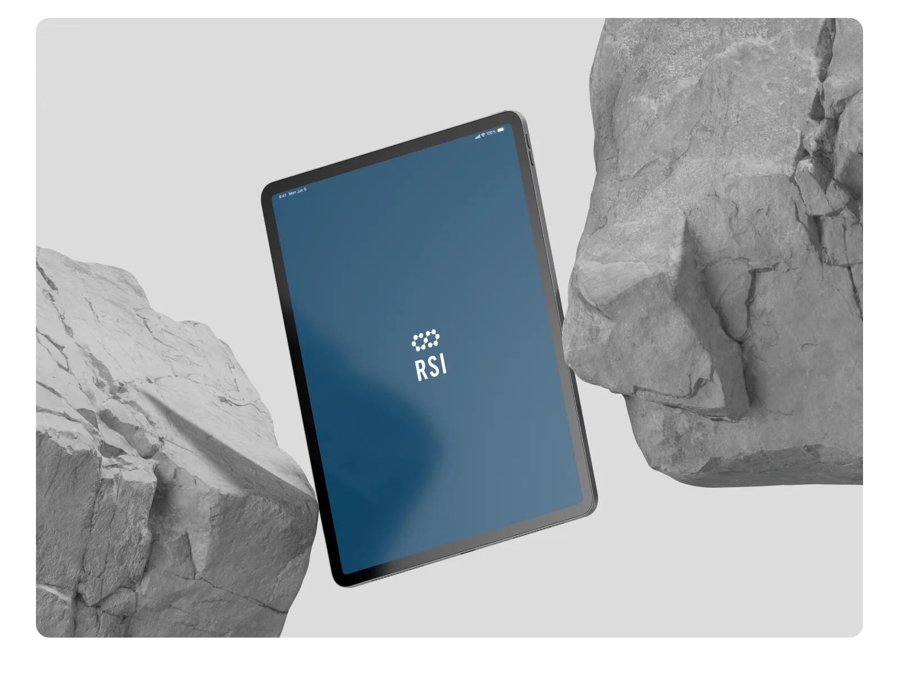
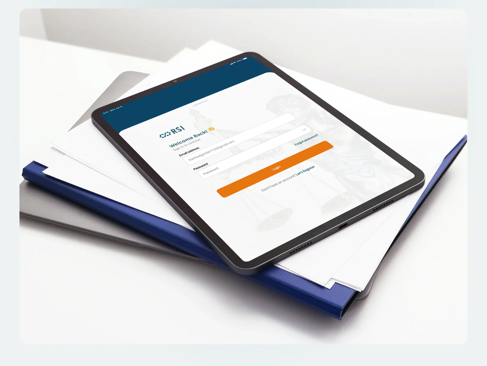
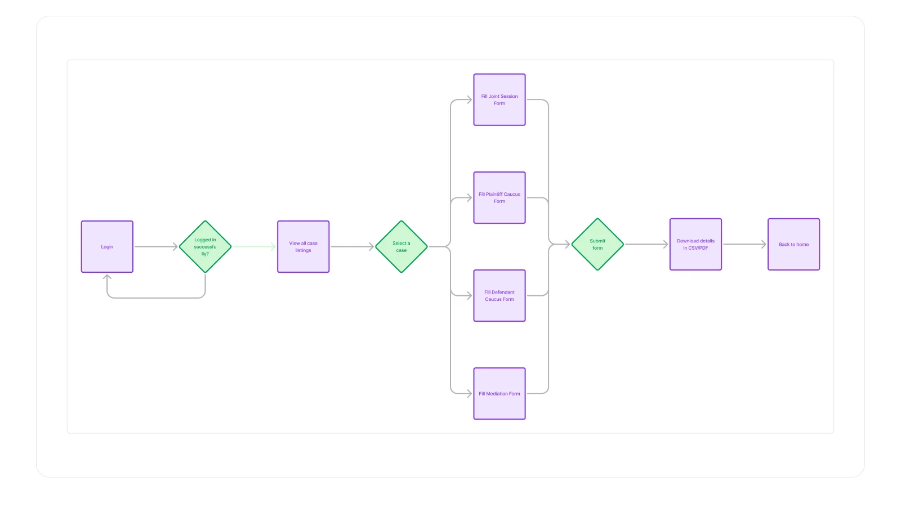
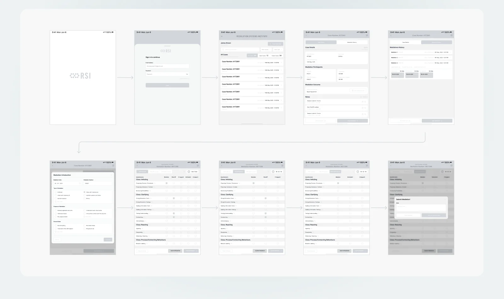
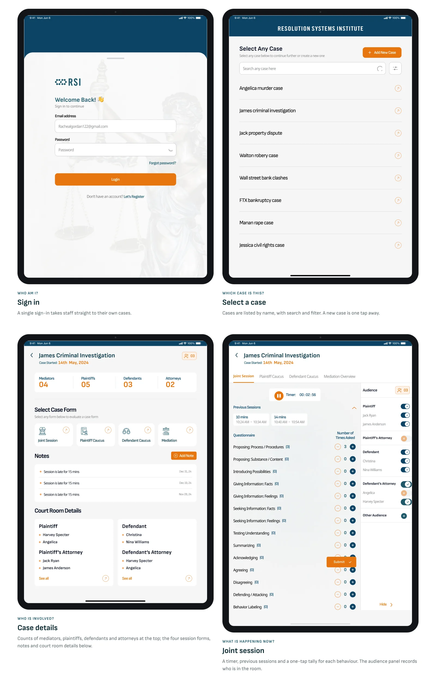
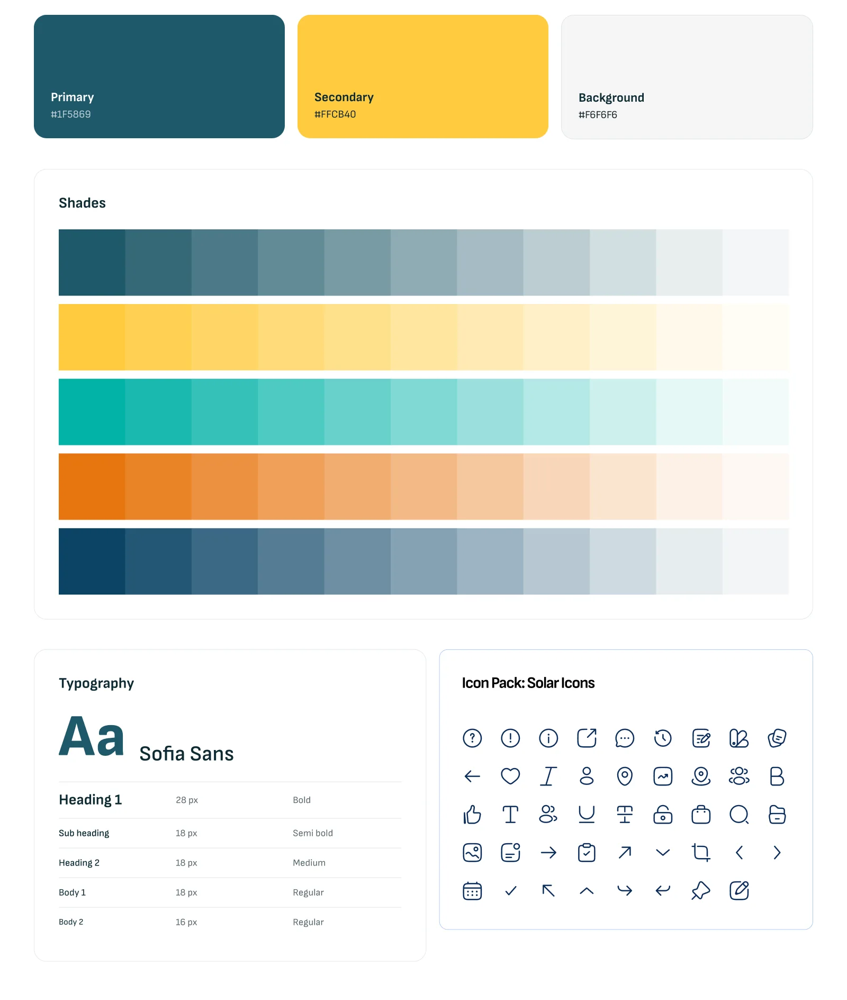
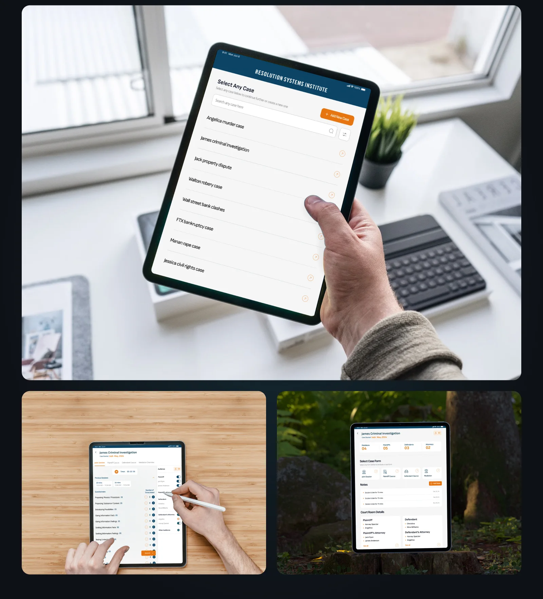

Resolution Systems Institute
A tablet app that helps mediators and RSI staff run a case and record each mediation session while it is happening.
- Role
- Senior Product Designer
- Timeline
- Approx. 3 months
- Platform
- iPad / tablet app
- Deliverables
- User flow, wireframes, UI design, design system

The client
A healthy, just society requires a justice system that is accessible to all. Resolution Systems Institute conducts research, provides mediation services and evaluates alternative dispute resolution systems to promote access to justice through cost-effective, timely and fair conflict resolution.
Mediators and RSI staff were struggling to record what happens in a mediation session while it is happening.
A session moves between a joint session and separate caucuses, with different people in the room each time. Timing, attendance, notes and each behaviour all have to be captured as they happen.
One tablet app, organised around the case.
Staff pick a case, open the form for the session in front of them — joint session, plaintiff caucus, defendant caucus or mediation overview — and tally each behaviour with a single tap while a timer runs. Attendance, notes and previous sessions sit on the same screen, so nothing has to be reconstructed afterwards.
What the app had to do
One case, four forms
Each case has a joint session, a plaintiff caucus, a defendant caucus and a mediation form, and staff need to reach the right one quickly.
Record in the moment
A timer, a one-tap tally for each behaviour and an attendance panel let staff record without looking away from the session for long.
Submit and export
Once a form is submitted, the details can be downloaded as CSV or PDF, then staff return to the case list.

From sign-in to a submitted session
The flow follows the order of a real mediation: sign in, choose the case, check who is involved, open the right session form, record, then submit.

Structure before style
Low-fidelity wireframes covered every step of the flow, so the order of screens and the layout of the session forms could be agreed before any visual design.

Four screens carry the work
Each screen answers one question for the person holding the tablet.

Calm, neutral, easy to scan
Deep teal reflects RSI’s role as a neutral third party. Warm accents are kept for the next action, and one typeface, Sofia Sans, is used at every size.

The finished interface

What the design delivers
A complete flow
Every step from sign-in to a submitted and exported session is covered in the user flow, the wireframes and the final interface.
Nothing to reconstruct
Attendance, notes, timing and previous sessions sit on the same screen as the form, so the record is finished when the session is.
A consistent system
One colour palette, one typeface (Sofia Sans) and one icon set are used across every screen.